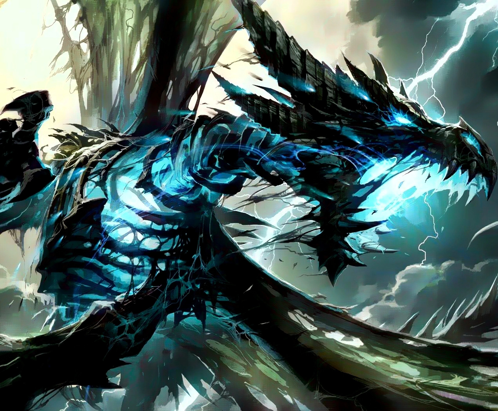

Sindragosa
| Sindragosa | |
|---|---|
|  | |
| Race | Frost Wyrm (Undead)" |
| Level | ?? Boss |
| Reaction | Alliance/Horde |
| Loction | Frostwing Hall(Icecrown Citidel) |
| Status | Killable, Deceased (lore) |
{kind=link}
Sindragosa " is the second encounter in the Frostwing Halls wing inside Icecrown Citadel. She is a Blue Dragon that was raised by the Lich King. She spawns after the defeat of the frost wyrms Rimefang (who escaped the Pit of Saron after Tyrannus' death) and Spinestalker. It is a Marathon, where players have to manage various debuff stacks.
-
1.
Abilities
- 1.1 Phase One
- 1.2 Phase Two (Air Phase)
- 1.3 Phase Three
- 2. Preparation
- 3. Phase One
- 4. Phase Two (Air Phase)
- 5. Phase Three
- 6. Heroic Difficulty
Abilities
Phase One
- Cleave - Inflicts normal damage plus 50 to an enemy and its nearest allies, affecting up to 10 targets.
- Frost Aura - Deals 3000 Frost damage to all nearby enemies every 3 sec. Deals 4500 on Heroic
- Frost Breath - Inflicts 27,750 to 32,250 Frost damage to enemies in a 60-yard cone in front of the caster. In addition, the targets' attack speed is decreased by 50% and movement decreased by 15% for 1.50 min. 1.5-sec cast. 37,000 to 43,000 on Heroic
-
Icy Grip - Extend tendrils of frigid wind to pull all nearby enemies to the caster.
After she uses this, she will follow it up with a Blistering Cold.
- Blistering Cold - Deals 30,000 Frost damage to enemies within 25 yards. 5 sec cast. 45,000 damage on Heroic
- Permeating Chill - Causes those who attack Sindragosa with physical attacks to be chilled to the bone, dealing 1000 Frost damage per 2 sec for each application.
- Tail Smash - Inflicts 11250 to 18750 damage on enemies within 20 yards of the tail's impact point, knocking them back.
-
Unchained Magic - Inflicts an arcane malediction on the target, causing any spells cast to result in a backlash of
Arcane power after 5 sec. Multiple spellcasts by the afflicted target will intensify the backlash.
- Instability -Using magic while afflicted with Unchained Magic will build up unstable energy, dealing 2,000 Arcane damage to the caster per spell cast, 5 seconds after spellcasting ends.
Phase Two (Air Phase)
Although Sindragosa takes to the air on a recurrent timer, her abilities are distinctively different from phase 1 and therefore is considered its own phase
-
Frost Beacon - Marks a target for imprisonment in an Ice Tomb. Instant, 7 sec duration. Targets 2 at a time.
- Ice Tomb - Conjures spheres of icy energy to entomb enemies in blocks of ice.
- Asphyxiation -Suffocation due to lack of air. Deals 8% of total health in damage each second. Occurs if a player encased in an Ice Tomb is not released within 20 seconds.
- Frost Bomb - Deals 23,563 to 26,437 Frost damage to all nearby targets. You need to hide behind Ice Tombs to avoid this damage. Sindragosa will target locations in the room while flying and cast it there. After she uses this 4 times she lands. On Heroic, deals 188,500 to 211,500 and will one-shot any player not in or completely behind an Ice Tomb.
Phase Three
All Phase One abilities, plus:
- Mystic Buffet - Buffets all nearby foes with Arcane energy, increasing all magic damage taken by 20% per application.
Preparation
Editor Mode: +
test